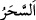
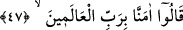

Bunu görünce “sihirbazlar derhal” yüzleri üzere Allah Teâlâ için “secdeye
kapandılar.” Onlar, asânın ejderhâya dönüşmesi ve kendilerinin hile ve aldatmaca ile
yaptıklarını yutmasının, sihirle ilgisi olmadığını (mûcize olduğunu) anladılar. Yani bu
durumu görmelerinin hemen ardından duraklama ve tereddüd göstermeden, kendilerine
mâlik olamadan, sanki biri kendilerini secdeye zorlamış gibi secdeye kapandılar. Çünkü
böyle bir şeyin sihrin sınırlarının dışında, Mûsâ (a.s.)’ı tasdik etmek üzere onun elinde
görünen ilâhî bir mûcize olduğunu bildiler.
Burada her fen ve ilimde derinleşmenin faydalı olduğuna delil vardır. Çünkü
sihirbazlar Mûsâ (a.s.)’ın yaptığı şeyin mûcize olduğunu ancak sihir ilmindeki
mahâretleriyle yakînen bildiler. Yine sihrin nihâyet bir göz boyama, yalan ve hakîkati
olmayan şeyleri canlandırma ve hayal ettirmeden ibâret olduğuna delil vardır. Çünkü
bir şeyin hakîkati/aslı sihirle başka bir şeye dönüşseydi, asânın yılan olmasını sihir
sınırını aşan bir mûcize kabul etmezler ve onu görünce secdeye kapanmazlardı. Sihir
konusunda geniş bilgi, Tâhâ sûresinde geçti.
Büyüklerden birisi der ki: Sihir kelimesi “
(seher)”den alınmıştır. Seher, birinci
fecir ile ikinci fecir arasındaki zamandır. Karışımı ve hakikati aydınlığın ve karanlığın
birbirine karışmasından ibârettir. Sabahın ışığı ona karıştığı için ne gecedir, güneş
doğmadığı ve gözle görünmediğinden dolayı ne de gündüzdür. Aynı şekilde
sihirbazların yaptığı da böyledir. O kesin bâtıl değildir ki adem/yok olsun. Çünkü göz
kendisinde şüphe olmayan bir şeyi görüp idrâk etmiştir. Halbuki o sırf hak/gerçek
değildir ki onun kendi gözünde bir varlığı olsun. Çünkü o aslında gözün gördüğü ve
görenin zannettiği şeyin bizâtihî kendisi değildir.
Şa’rânî bu sözü naklettikten sonra: “Bu benzerini asla işitmediğimiz kıymetli bir
sözdür.” der.
47. “Âlemlerin Rabbine iman ettik” dediler.
Doğru ve samimi olarak “Âlemlerin Rabbine iman ettik” dediler.” Bir bak, nasıl
sabahleyin sihirbaz oldukları halde akşamleyin şehâdet getiren mü’minler oldular. Asıl
aldanan kimse bir kısım amellerine, sözlerine ve hallerine güvenendir.
Hâfız der ki:
Amele güvenme, çünkü o zeval gününde
Kudret kaleminin senin defterine ne yazdığını nereden bileceksin?
Amel defterinin siyahlığı yüzünden bu sarhoşu kınama
Kazâ ve kader kalemi başına ne yazdı, kim bilebilir?